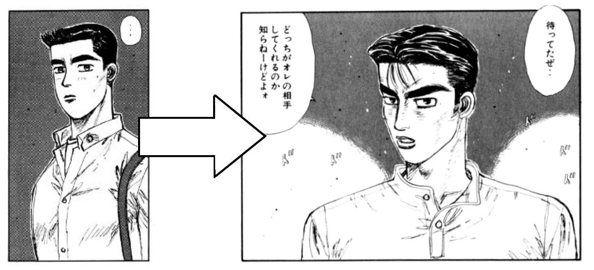

Напоминаю, что это РЕВЬЮ, в котором высказывается наше личное мнение, с которым можно не соглашаться :D
«Инициал Ди» - самый известный тайтл у Сигено-сэнсэя. С сюжетом и персонажами можно ознакомиться здесь, там, а еще тут. Аниме посмотреть вон там, мангу почитать вот тут и там.
Манга начала выходить с 1995 года, когда у Сигено-сэнсэя уже был внушительный опыт, полученный от предыдущих работ, таких как «Bari-bari densetsu», «Допкан», и другие. Аниме вышло уже в 1998 году, и автор тоже принимал активное участие в производстве, как раз поэтому экранизация не потеряла своей авторской выразительности.
Была «история создания» у Инициала Ди, которую Маэстро рассказал в одном интервью: с его слов, он на гонорар с Bari-bari densetsu купил себе Хачироку, так как на тот момент машину многие хвалили. Он заприметил ее, когда проезжал мимо салона «Тойота» на мотоцикле. В тоже время Сигено-сэнсэя беспокоило то, что последние работы не получили популярность, как Bari-bari densetsu, и он уже хотел завязывать с карьерой мангаки, но близкий человек в тот момент предложил ему придумать историю с машинами. Маэстро так же вдохновляли еженедельные поездки на 86-ой по Гумме.
«…Это то, что движет мной как мангакой, это невозможно выразить словами. Если я этого не почувствую, я, возможно, не смогу рисовать мангу…» - Сигено-сэнсэй о своем вдохновении. – [цитата из интервью] Нам кажется, что эта цитата ярко и достаточно полно описывает его творчество.
Можно сказать, что уже к моменту выхода Инициала Ди, у Маэстро появилась своя «формула» сюжета: первая половина сюжета - 50% - спорт и остальные 50% - повседневность (жизнь вне спорта, личностные отношения, и так далее), остальную половину сюжета занимает спорт на 90%, оставляя жалкие 10% на остальное. И естественно все значения условные.
Если думать глобально, то Инициалу Ди идейно и образно предшествовали два тайтла: «Голубое небо в конце туннеля» и «Допкан». Первый тайтл из перечисленных дал нам образ «парня работящего» на Хачироку, второй тайтл дал нам, своего рода, «актерскую систему» как у Осаму Тэдзуки (в качестве примера: Китамура Такаши из Допкана в процессе повзрослел и «сыграл» Наказато Такеши из Инициала Ди), и командные выступления.
 Слева-направо: Китамура Такаши из «Допкан», Наказато Такеши из «Инициал Ди»Так же можно сказать и про общие черты предшественников, которые повторились и в Инициале Ди: условно-драматичные любовные линии главных героев, невезучие друзья, и «подружки-зажигалочки», которые запутались в собственных чувствах. Единственное, Сигено-сэнсэй ушел от образа роковой блондинки, развив его до «полностью принимающей» подружки, но эту деталь мы обсудим в других ревью :D
Известно, что спокон - это поджанр повседневности, потому что помимо спорта, главный герой не может не контактировать с бытовыми ситуациями, и другими персонажами вне спорта. Иногда это даже происходит на контрасте, как в случае с Такуми: в жизни он привык занимать позицию наблюдателя, на первый взгляд кажется даже отстраненным, но как только дело касается гонок, то он проявляет себя с иной стороны – оживленный, сконцентрированный на вождении, и даже взбудораженный, в позитивном смысле. За ним и другими героями приятно наблюдать, если есть этот контраст. Тогда, когда этот контраст исчезает – повествование становится монотонным и, откровенно говоря, скучным.
И как раз сейчас хочу отметить, что Инициала Ди это не миновало (как и Bari-bari и Допкан), буквально до 4 стадии аниме и 192 главы манги этот баланс спорта и повседневности существовал, а после - гонки поглотили все. Честно говоря, хотелось больше видеть в последних стадиях общение вне гонок у команды: в рёканах, в кафе, и прочих ситуациях. Как минимум, аниме смотрелось лучше, а манга читалась проще, а как максимум, можно было еще больше показать братьев Такахаши (ну хотя бы) изнутри, больше узнать об их прошлом (каждый, я думаю, хотел узнать больше про прошлую жизнь хулиганскую у Кёске, и их братские отношения с Рёске), хотя бы в диалогах. Во всяком случае, у нас всегда был огромный простор для фанфикшена и фан-арта разной категории откровенности :D
Было бы странно не затронуть тему эмоций, которые мы получили во время и после прочтения и просмотра. Многие арки заставляли нас смеяться, сопереживать, местами плакать от коктейля эмоций, местами ловить немного кринжа, благодаря эмоционально-наполненному повествованию. Визуальный стиль Маэстро и модный на тот момент времени евробит создали ту неповторимую атмосферу. Но что самое главное, после просмотра от наслоения позитивных эмоций и отчасти собственных воспоминаний, многие испытали дежавю. Да такое, которые сегодня современное поколение назвало бы «анемойя» – та самая ностальгия по времени и месту в которым не жил, и так же по тем вещам из эпохи. В самом деле, заманчивый опыт, получается. Вспоминая цитату Сигено-сэнсэя из интервью, мы можем с ним полностью согласиться, потому что мы тоже почувствовали то, что он сам переживал и передал это на бумаге, а затем на экране.
Над ревью работали: